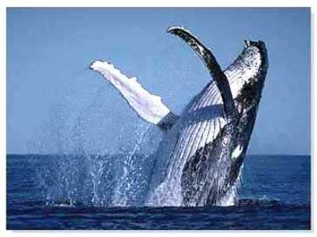

BIENVENIDOS A NUESTRO SITIO WEB
OBJETIVO:
ANIMALES ARGENTINOS es una propuesta didáctica, la cual presenta información sobre algunas especies autóctonas.
Es una selección muy variada de animales, conocidos y desconocidos, que viven en distintas regiones de la Argentina. Ya que nuestro país posee un extenso territorio, con climas y paisajes variados, tiene una variedad sin igual en su fauna.
Brindamos información de cada animal, con terminología básica para el conocimiento de nuestra fauna.
